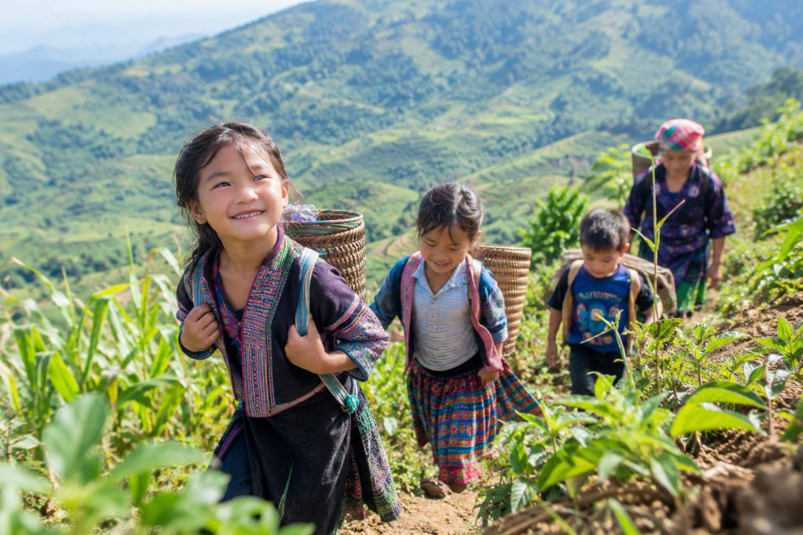

Trong veo ánh mắt trẻ thơ giữa mùa nương rẫy
Nghỉ hè, khi bố mẹ lên nương, những đứa trẻ vùng cao cũng có thêm một chuyến đi của riêng mình. Đường lên rẫy quanh co, nương ngô xanh ngút mắt, chỗ nào cũng có thứ để ngó nghiêng, khám phá. Có em lon ton theo chân mẹ, có em vừa đi vừa ríu rít chuyện ở nhà, chuyện đến lớp. Một ngày trên nương bắt đầu như thế, bằng những bước chân nhỏ và bao nhiêu điều tò mò chưa kịp gọi tên.
Theo chân bố mẹ, theo cả những cuộc vui

Đường lên nương có khi chẳng xa lạ với các em. Thế nhưng, đi cùng bố mẹ vào một buổi hè vẫn có cái thú riêng. Dọc đường, một chiếc lá lạ, một con bướm bay qua hay vạt cỏ ven lối cũng khiến các em dừng chân ngắm nghía.
Đến nơi, người lớn bắt tay vào công việc. Trẻ nhỏ phụ giúp những việc vừa sức, rồi lại tìm cách vui chơi trong lúc nghỉ. Nương rẫy rộng, bạn đồng hành có khi là anh chị em trong nhà. Chẳng cần trò chơi cầu kỳ, các em vẫn có thể bày ra đủ chuyện để cười đùa.
Ở đó, mùa hè không nằm trong những trò chơi điện tử. Mùa hè là lúc được theo bố mẹ đi làm, được chạy trên con đường quen, được ngồi nghỉ giữa nương và nghe người lớn gọi tên nhau í ới.

Một ngày trên nương, bao nhiêu chuyện để nhớ
Khi bóng nắng dần nghiêng, công việc của bố mẹ cũng dần xong. Những đứa trẻ lại lẽo đẽo theo chân người lớn trở về. Có em đã thấm mệt, có em vẫn còn mải theo những cuộc vui.
Một mùa hè khép lại, nhưng với trẻ nhỏ, có lẽ điều đáng nhớ nhất chính là một ngày được đi cùng bố mẹ, được nhìn thấy những điều mới mẻ ngay trên con đường thân thuộc, và có thêm thật nhiều câu chuyện vui để líu lo với bạn vào những ngày sau.